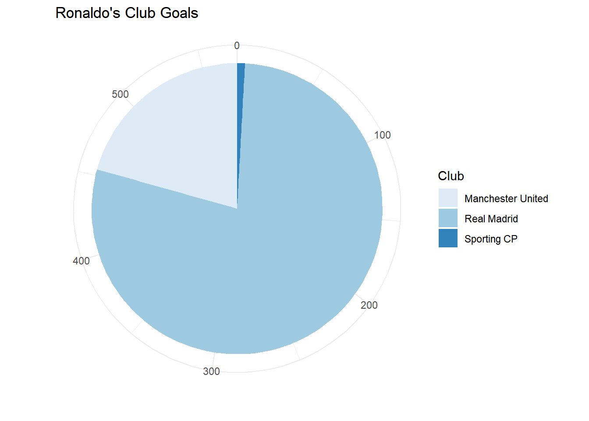
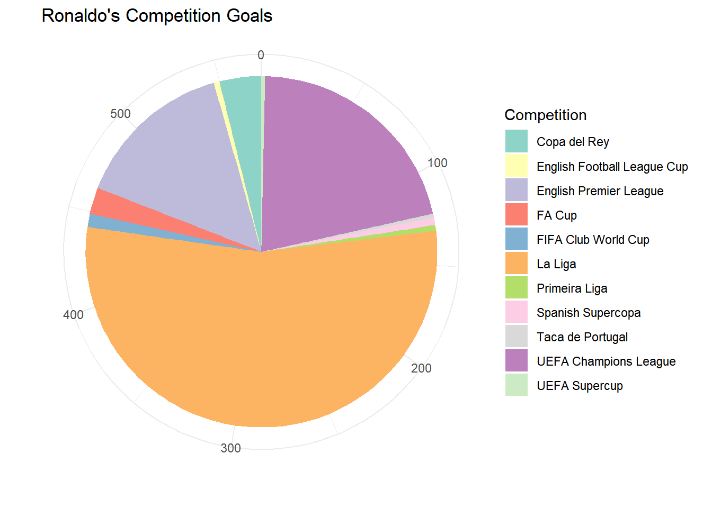
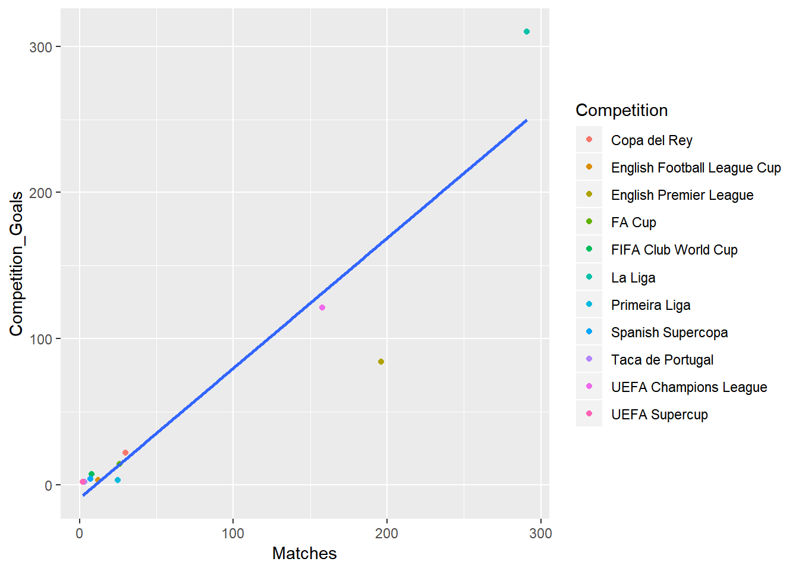
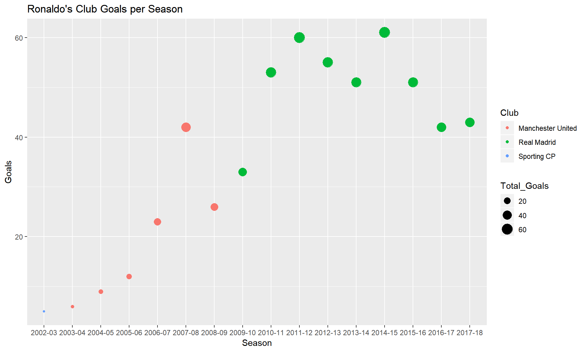
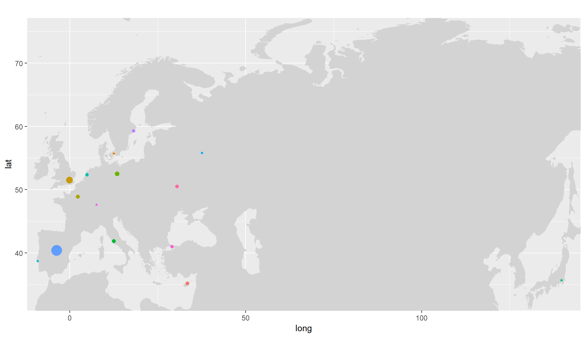
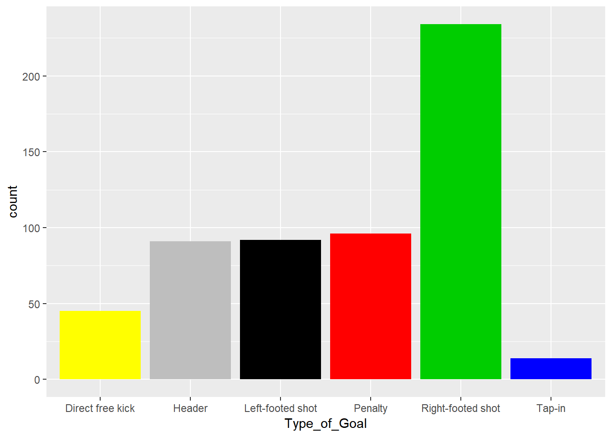

5 Part II - Goals
5.1 Introduction
5.1.1 Topic
Cristiano Ronaldo
Cristiano Ronaldo is arguably one of the top football (soccer) player of all time. Ronaldo is famous for his speed, dribbling skills, and most importantly, his goal scoring ability. As a guy who has been following soccer for more than 15 years, I have witnessed so many goals that Ronaldo has scored throughout his career, from stunning direct free kicks to crucial game-winning shots. Ronaldo used to be my favorite player, due to the fact that he spent 6 seasons from 2003 to 2009 with my favorite ball squad - Manchester United. Then he left MU and joined Real Madrid, where he has elevated his game to a whole new level and established himself as one of the top footballers in the world. Because of all the information I just mentioned, I decided to choose a dataset about Ronaldo’s goals and provide some analyses on it.
5.1.2 Data
The data was collected from Transfermarkt.com. Notice that all the goals in this dataset are all Ronaldo’s goal at the Club level (i.e. none of them are his International goals for his home nation - Portugal). The dataset does not have any names for the variables, so I will assign the variable’s names. Each of Ronaldo’s goals is represented by the following variables (which I’ll assign, of course!):
Season: A total of 16 seasons from 2002-03 to 2017-18
Competition: 11 different leagues and cups that Ronaldo has scored in
Competition_Type: Whether a competion is a Domestic League, Domestic Cup, European Cup or International Cup
Club: The 3 clubs that Ronaldo has played for
Opponent: Clubs that Ronaldo has scored against
Opponents_Country: The opposing squad’s “nationality”
Treated_as: For the most part, this is basically where the goals were in the back of the net (Home/Away). But in some cases, for example, UEFA Champions League Final, the game was played at a neutral field, a team will be treated as the “Home” team and got to wear their Home uniform.
Final_Score: The result of the matches
Minute: At what point of the match did a goal took place?
Score_at_this_point: The game score after a goal
Type_of_goal: Whether a goal is a header, left/right-footed shot, tap-in, penalty or direct free kick
5.2 Analysis
I started off by loading the packages that I’ll need to analyze the dataset.
library(tidyverse)
library(mosaic)
library(readxl)
library(maps)
library(knitr)Next, the dataset was loaded from my personal drive.
Goals <- read_excel("~/Data229/Project/Goals/CR7 Goals.xlsx", col_names = FALSE)Like I mentioned above, the following names were being assigned to the variables of this dataset:
colnames(Goals) <- c("Season","Competition","Competition_Type","Club","Opponent","Opponents_Country","Treated_as","Final_Score","Minute","Score_at_this_point","Type_of_Goal")There were also a number of missing cells in the inital dataset. This is because when Ronaldo scored multiple goals in one match, they just recorded the goals’ minute, the score after a goal and the type of goal. So the fill() function was used to complete this dataset.
Goals <- Goals %>%
fill(Season, Competition, Competition_Type, Club, Opponent, Opponents_Country, Treated_as, Final_Score, Minute, Score_at_this_point, Type_of_Goal)5.2.1 Club Goals
The first figure that I chose to analyze was Ronaldo’s club goals. Below are the visual and numerical summaries for Ronaldo’s goals for his 3 teams:
Goals %>%
group_by(Club) %>%
summarise(Club_Goals = n()) %>%
kable()| Club | Club_Goals |
|---|---|
| Manchester United | 118 |
| Real Madrid | 449 |
| Sporting CP | 5 |
Goals %>%
group_by(Club) %>%
summarise(Club_Goals = n()) %>%
ggplot(mapping = aes(x = "", y = Club_Goals, fill = Club)) +
geom_bar(stat = "identity") +
coord_polar("y", start = 0) + scale_fill_brewer(palette ="Blues") + theme_minimal() +
ggtitle("Ronaldo's Club Goals") +
xlab("") + ylab("")
Ronaldo has scored 449 goals for Real Madrid, which is the highest among the 3 clubs that he has played for. He also had 118 goals for Manchester United, and his career Sporting CP goals is only 5.
5.2.2 Competition Goals
Below are the visual and numerical summaries for Ronaldo’s goals in leagues and cups. I actually created a table called “CompetitionsGoals” since I’ll use this later on.
kable(Competition_Goals <- Goals %>%
group_by(Competition) %>%
summarise(Competition_Goals = n()))| Competition | Competition_Goals |
|---|---|
| Copa del Rey | 22 |
| English Football League Cup | 3 |
| English Premier League | 84 |
| FA Cup | 14 |
| FIFA Club World Cup | 7 |
| La Liga | 310 |
| Primeira Liga | 3 |
| Spanish Supercopa | 4 |
| Taca de Portugal | 2 |
| UEFA Champions League | 121 |
| UEFA Supercup | 2 |
Competition_Goals %>%
ggplot(mapping = aes(x = "", y = Competition_Goals, fill = Competition)) +
geom_bar(stat = "identity") +
coord_polar("y", start = 0) + scale_fill_brewer(palette ="Set3") + theme_minimal() +
ggtitle("Ronaldo's Competition Goals") +
xlab("") + ylab("")
Ronaldo has scored the most goals in the La Liga (310). His next 2 highest scoring compeitions are UEFA Champions League (121) and English Premier League (84). On the other hand, Ronaldo’s number of goals in smaller competitions like UEFA Supercup, Taca de Portugal, Primeira Liga,… are very small, primarily due to him playing a tiny amount of games in those leagues/cups (which I’ll get to in just a bit)
5.2.3 Goals vs Appearances
Is the a connection between Ronaldo’s goals and the number of competition matches he has participated in? We’ll soon find out!
The table below illustrates the total number of games Ronaldo has played in 11 different leagues/cups (The data was collected from Wikipedia):
kable(Appearances <- tribble(
~Competition, ~Matches,
"English Premier League", 196,
"La Liga", 291,
"Primeira Liga", 25,
"Taca de Portugal", 3,
"Copa del Rey", 30,
"FA Cup", 26,
"English Football League Cup", 12,
"UEFA Supercup", 2,
"Spanish Supercopa", 7,
"FIFA Club World Cup", 8,
"UEFA Champions League", 158))| Competition | Matches |
|---|---|
| English Premier League | 196 |
| La Liga | 291 |
| Primeira Liga | 25 |
| Taca de Portugal | 3 |
| Copa del Rey | 30 |
| FA Cup | 26 |
| English Football League Cup | 12 |
| UEFA Supercup | 2 |
| Spanish Supercopa | 7 |
| FIFA Club World Cup | 8 |
| UEFA Champions League | 158 |
Now, let’s make a graph to find out the relationship between goals and games played. But before the plot is made, I joined the 2 tables Competition_Goals and Appearances to get a new table called “Goals_n_Matches”
Here’s a look at that table:
kable(Goals_n_Matches <- full_join(Competition_Goals, Appearances, by = "Competition"))| Competition | Competition_Goals | Matches |
|---|---|---|
| Copa del Rey | 22 | 30 |
| English Football League Cup | 3 | 12 |
| English Premier League | 84 | 196 |
| FA Cup | 14 | 26 |
| FIFA Club World Cup | 7 | 8 |
| La Liga | 310 | 291 |
| Primeira Liga | 3 | 25 |
| Spanish Supercopa | 4 | 7 |
| Taca de Portugal | 2 | 3 |
| UEFA Champions League | 121 | 158 |
| UEFA Supercup | 2 | 2 |
Now I can use the table I just created to make my graph.
Goals_n_Matches %>%
ggplot(mapping = aes(x = Matches, y = Competition_Goals)) +
geom_point(mapping = aes(color = Competition)) +
stat_smooth(method = "lm", se = FALSE)
The plot reveals a strong, linear and positive relationship between Competition goals and matches. The overall trend is the more games Ronaldo plays in a competition, the more goals he scores.
lm(Competition_Goals ~ Matches, data = Goals_n_Matches)
Call:
lm(formula = Competition_Goals ~ Matches, data = Goals_n_Matches)
Coefficients:
(Intercept) Matches
-9.4125 0.8912 The regression equation is CompGoals^ = 0.8912*Matches - 9.41
The slope of this equation is 0.8912, which indicates that every extra match is associated with an increase of 0.89 in goals. (If he plays 100 matches, his total goals will increase by about 89)
5.2.4 Goals per Season
Goals %>%
group_by(Season, Club) %>%
summarise(Total_Goals = n()) %>%
ggplot(mapping = aes(x = as.factor(Season), y = Total_Goals)) +
geom_point(mapping = aes(size = Total_Goals, color = Club)) +
ggtitle("Ronaldo's Club Goals per Season") +
xlab("Season") + ylab("Goals")
Based on the graph, Ronaldo’s scoring has improved throughout his career. During the 6 years stretch from 2010 to 2015, Ronaldo scored 40 or more goals in every single season. His highest scoring season was 2014-15 where he netted more than 60 goals. The number of goals during Ronaldo first 4 years season is not high, simply because he was still a “baby” back then and did not have plenty of playing time.
5.2.5 Multiple Goals
Ronaldo is a great scorer, and we’ve seen him scored multiple goals in a match so many times. This table shows how many matches Ronaldo has put the ball in the opponent’s net more than 1 time. I used the following soccer lingo to illustrate the amount of goals scored:
- Brace = 2 goals
- Hat-trick = 3 goals
- Poker = 4 goals
- Glut = 5 goals
kable(MultipleGoals <- Goals %>%
group_by(Season, Competition, Competition_Type, Club, Opponent, Opponents_Country, Treated_as, Final_Score) %>%
summarise(Scored = n()) %>%
filter(Scored > 1) %>%
group_by(Scored) %>%
summarise(Total = n()) %>%
spread(key = Scored, value = Total) %>%
rename(Brace = "2","Hat-trick" = "3", Poker = "4", Glut = "5") %>%
gather(Brace, 'Hat-trick', Poker, Glut, key = Scored, value = Total))| Scored | Total |
|---|---|
| Brace | 104 |
| Hat-trick | 37 |
| Poker | 6 |
| Glut | 2 |
Ronaldo has played against many opponents from different nations in his career. This table is named MultipleGoals and it shows several different countries and how many matches Ronaldo has scored more than 1 goal against opponents from those countries. For example, if Country = France and HowManyTimes = 4, this means CR7 has scored multiple goals in 4 matches against French teams. (This is not the same as the number of goals he has had in France!)
kable(MultipleGoals <- Goals %>%
group_by(Season, Competition, Competition_Type, Club, Opponent, Opponents_Country, Treated_as, Final_Score) %>%
summarise(Scored = n()) %>%
filter(Scored > 1) %>%
group_by(Opponents_Country) %>%
rename(Country = Opponents_Country) %>%
summarise(HowManyTimes = n()))| Country | HowManyTimes |
|---|---|
| Cyprus | 3 |
| Denmark | 1 |
| England | 24 |
| France | 4 |
| Germany | 8 |
| Italy | 4 |
| Japan | 1 |
| Netherlands | 2 |
| Portugal | 1 |
| Russia | 1 |
| Spain | 92 |
| Sweden | 2 |
| Switzerland | 1 |
| Turkey | 2 |
| Ukraine | 3 |
The table below shows all the countries in the MultipleGoals table and their latitude (lat) and longtitude (long). I chose that lat and long of the capital city or biggest city of each nation to represent the whole nation.
kable(Places <- tribble(
~Country, ~lat, ~long,
"Cyprus", 35.2, 33.4,
"Denmark", 55.7, 12.6,
"England", 51.5, -0.1,
"France", 48.9, 2.3,
"Germany", 52.5, 13.4,
"Italy", 41.9, 12.5,
"Netherlands", 52.4, 4.9,
"Portugal", 38.7, -9.1,
"Russia", 55.8, 37.6,
"Spain", 40.4, -3.7,
"Sweden", 59.3, 18.1,
"Switzerland", 47.6, 7.6,
"Turkey", 41.0, 29.0,
"Ukraine", 50.5, 30.5,
"Japan", 35.7, 139.8))| Country | lat | long |
|---|---|---|
| Cyprus | 35.2 | 33.4 |
| Denmark | 55.7 | 12.6 |
| England | 51.5 | -0.1 |
| France | 48.9 | 2.3 |
| Germany | 52.5 | 13.4 |
| Italy | 41.9 | 12.5 |
| Netherlands | 52.4 | 4.9 |
| Portugal | 38.7 | -9.1 |
| Russia | 55.8 | 37.6 |
| Spain | 40.4 | -3.7 |
| Sweden | 59.3 | 18.1 |
| Switzerland | 47.6 | 7.6 |
| Turkey | 41.0 | 29.0 |
| Ukraine | 50.5 | 30.5 |
| Japan | 35.7 | 139.8 |
Next, I used a full_join to join 2 tables Places and MultipleGoals and I named my new table “Opponents”
kable(Opponents <- full_join(Places, MultipleGoals, by = "Country"))| Country | lat | long | HowManyTimes |
|---|---|---|---|
| Cyprus | 35.2 | 33.4 | 3 |
| Denmark | 55.7 | 12.6 | 1 |
| England | 51.5 | -0.1 | 24 |
| France | 48.9 | 2.3 | 4 |
| Germany | 52.5 | 13.4 | 8 |
| Italy | 41.9 | 12.5 | 4 |
| Netherlands | 52.4 | 4.9 | 2 |
| Portugal | 38.7 | -9.1 | 1 |
| Russia | 55.8 | 37.6 | 1 |
| Spain | 40.4 | -3.7 | 92 |
| Sweden | 59.3 | 18.1 | 2 |
| Switzerland | 47.6 | 7.6 | 1 |
| Turkey | 41.0 | 29.0 | 2 |
| Ukraine | 50.5 | 30.5 | 3 |
| Japan | 35.7 | 139.8 | 1 |
World <- map_data("world")This map indicates the countries that Ronaldo has scored multiple goals against teams from those countries.
World %>%
ggplot(mapping = aes(x = long, y = lat)) +
geom_polygon(mapping = aes(group = group), fill = "lightgrey") +
geom_point(data = Opponents, mapping = aes(x = long, y = lat, fill = "blue", size = HowManyTimes, color = Country)) +
coord_fixed(ratio = 1.8, xlim = c(-5,138), ylim = c(33, 75)) +
theme(legend.position = "none") 
The bigger the point is, the more times Ronaldo has scored more than 1 goal in a match against teams from the country represented by that point. Spain (the very big blue point) and England (the big orange point) are the 2 nations where their teams often conceeded more than 1 Ronaldo’s goal in a game. All but 1 country is European - the only 1 that is not is Japan (the lonely dot to the right of the map).
5.2.6 Types of Goal
Goals %>%
group_by(Type_of_Goal) %>%
summarise(count = n()) %>%
kable()| Type_of_Goal | count |
|---|---|
| Direct free kick | 45 |
| Header | 91 |
| Left-footed shot | 92 |
| Penalty | 96 |
| Right-footed shot | 234 |
| Tap-in | 14 |
Goals %>%
ggplot(mapping = aes(Type_of_Goal)) +
geom_bar(fill = c(7:12))
Overall, we can see that Ronaldo has had more right-footed shots than any other types of goal, which is not surprised because he is right-footed. He is also an all-around scorer. The number of goals as a header, a left-footed shot and a penalty are about the same. Ronaldo has also turned about 50 direct free kicks into goals and the number tap-in’s is the least among the 6 types of goal.